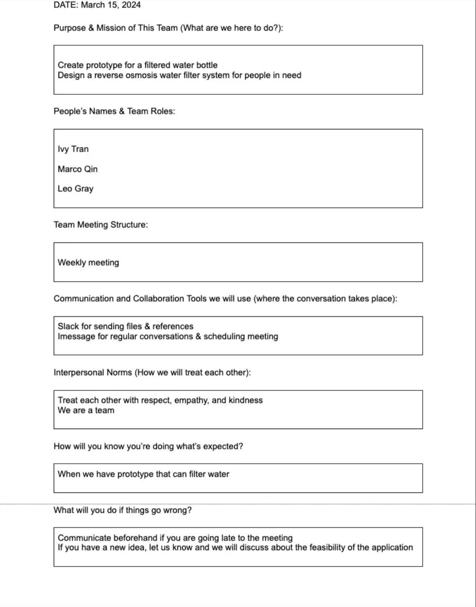
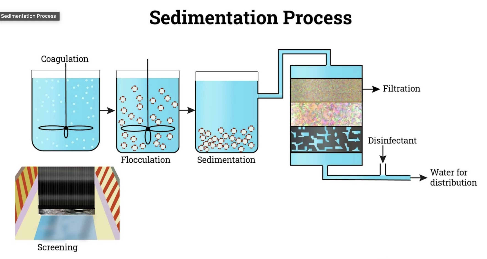
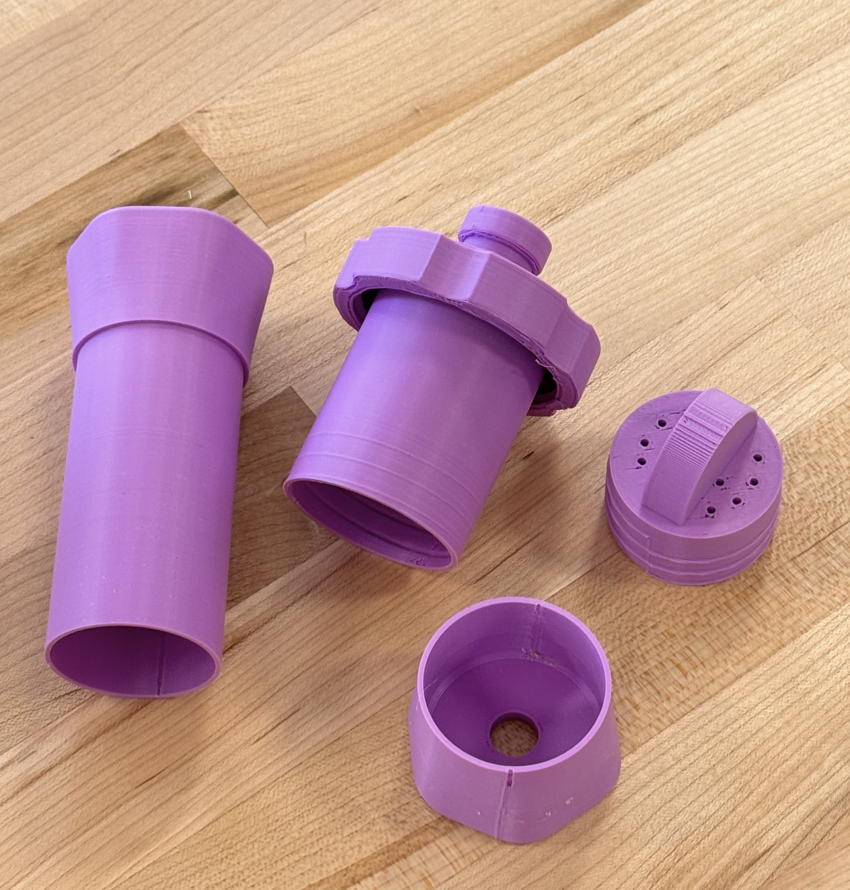
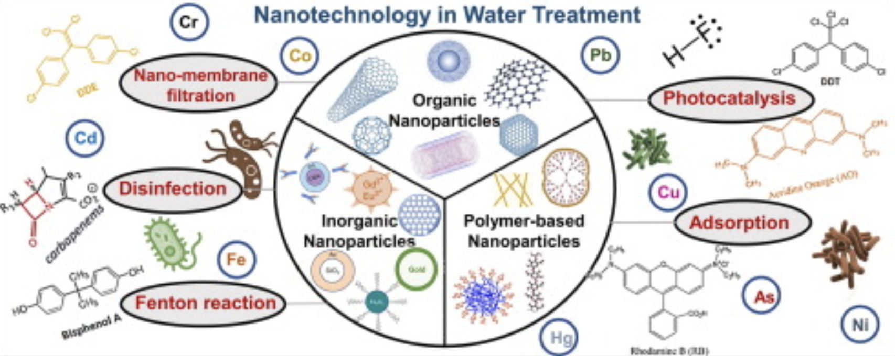
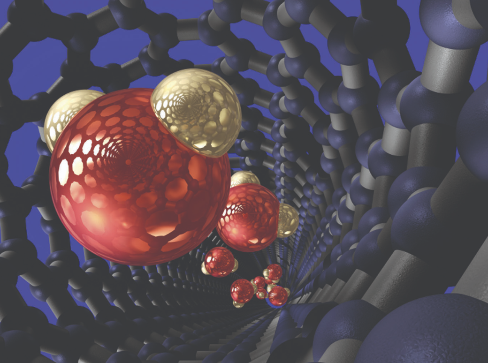
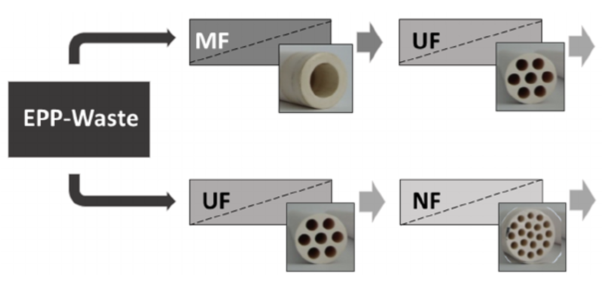
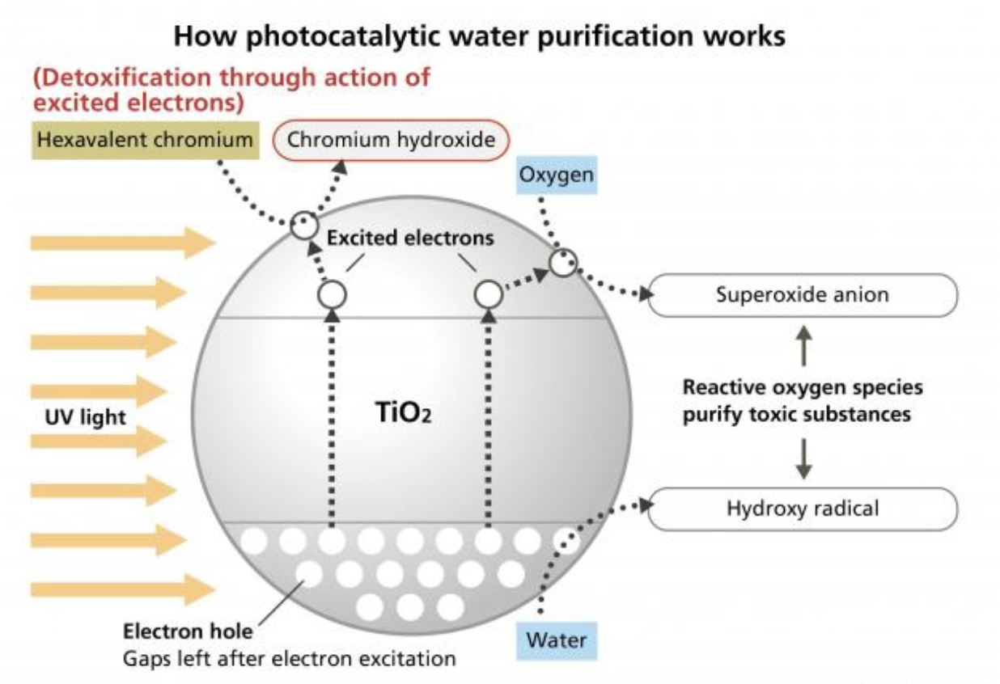
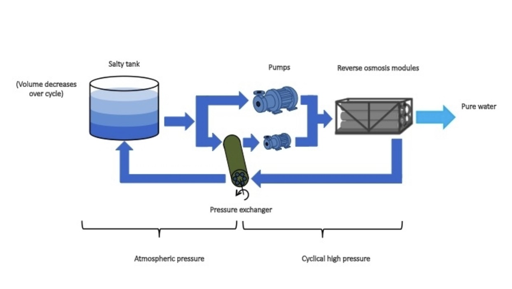

Final Project: Problem Identifying & Brainstorming
This is a project I'm very excited about because we are solving a problem that I care a lot throughout my life
Reflection on Identifying Problem stage of Final Project
Team Collaboration Agreement
Link to Collaboration Agreement: https://shorturl.at/ablZ4
Define the Problem
In the bustling streets of Vietnam, my hometown, and among my engagements in United Nations volunteer projects, I became aware of the water contamination crisis—an issue not unique to Vietnam but prevalent across Southeast Asia, notably in Cambodia. The stark disparity in water accessibility between these regions and the United States, where tap water is readily available, sparked a determination within me to seek solutions.
In Cambodia, a significant portion of the population faces challenges related to accessing safe drinking water and sanitation facilities, exacerbated by pollution from inadequate waste management. The integration of cutting-edge water filtration technologies presents a promising avenue to address these challenges effectively. I'm very glad to have found my two teammates Marco and Leo who all share the same goals and care about this alarming issue. Together, we are determined to give back to not only the community and also the world around us.

Science Behind Existing Solutions
The cornerstone of modern water filtration includes a multi-stage process. Sedimentation acts as the first barrier, utilizing various grain sizes to mechanically filter out larger particulates. Following this, activated carbon filters play a crucial role in adsorbing bacteria and reducing pollutants through a process of chemical adsorption. Lastly, reverse osmosis leverages a semi-permeable membrane to selectively allow water and certain minerals through, relying on pressure differentials to remove unwanted contaminants effectively.
Customer Profiles
1. Tourists interested in buying water bottles:
These are tourists looking for unique cultural experiences, who also care about the environment and want to help the communities they visit.
During their travels, they explore attractions, dive into cultural experiences, and look for ways to support local sustainability efforts. You'll often find them in airports when they arrive or leave, learning about local challenges such as water scarcity and feeling motivated to help by buying products that support good causes.
They get interested when they learn about issues like the water crisis in Cambodia at places where they can buy things, like airports. They like the idea of getting something useful, like a water bottle, while also helping out. Knowing that their purchase helps build water filtration systems in Cambodia really motivates them.
2. People living in rural areas of Cambodia:
These people live in the countryside of Cambodia where there's often not much access to clean drinking water.
Their day-to-day life includes farming, taking care of their homes, and being part of their community. Having clean water is essential for their health and overall life. They are found in the more remote parts of the countryside, far from cities with better water facilities, usually gathering in places like community centers or schools.
What makes them interested is the introduction of a water filtration system that everyone in the community can use. It's important that the system is simple and easy for everyone to maintain. Having a reliable source of clean water can greatly improve their lives, reduce sickness, and help the community thrive.

Open-source hardware solutions
In additiion, we investigated a range of open-source hardware solutions, focusing on those that varied significantly in their approach to filtration and accessibility. For instance, we reviewed designs like a gravity filter cover for community use, and a DIY 3D-printed water filter, accessible on platforms such as Cults3D and Instructables. These designs offer valuable insights into scalable and adaptable filtration systems that can be tailored to specific community needs.
Link 1: https://cults3d.com/en/3d-model/various/gravity-filter-cover-for-msr-autoflow
Link 2: https://www.instructables.com/Open-Source-3D-Printed-Water-Filter/
Link 3: https://www.instructables.com/Self-Cleaning-Rain-Water-Filter-With-No-Moving-Par/ "
We conducted tests on the water filter and the gravity filter models we created using 3D printing, both with and without activated carbon included. Through these tests, we've identified that to prevent bacteria from inhabiting the microscopic crevices inherent in 3D-printed materials, treating the surfaces with resin is necessary.
Looking ahead, once we refine our design to meet our standards, we plan to collaborate with a fabrication service like SendCutSend to produce the components from more robust materials, ensuring both durability and safety.
Key Product Features
Our product will prioritize the removal of harmful bacteria and pollutants from local water sources. It will be designed with accessibility in mind, ensuring that those most in need can benefit from clean water. Success will be quantitatively assessed by the effectiveness of our filtration system in reducing bacterial content in the water and qualitatively by our reach within the affected communities. Our goal is to significantly reduce waterborne diseases by providing a reliable source of clean water.
Our testing protocol will involve rigorous field trials, where water samples before and after filtration will be analyzed for bacterial and pollutant levels. Community feedback will also play a critical role in evaluating the system's ease of use and overall acceptance.
Design Thinking
Throughout the Brainstorming process, our team employed the Feedback Grid & Big Idea Vignettes approach (Design Thinking Toolkit of IBMgit), brainstorming a wide range of solutions to address the water crisis. The discussion focused on creating sustainable revenue models, like selling water bottles to fund the installation of community water filtration systems in Cambodia.
Our team utilized Big Idea Vignettes to captivate and inform potential supporters about the impact of their contributions. We crafted a series of narratives, each paired with compelling sketches, to vividly bring our mission to life. One narrative portrayed a Cambodian child, once plagued by waterborne diseases, now thriving and attending school because of access to clean water through our filtration systems. Another story highlighted a tourist, who upon purchasing one of our water bottles, discovers that their purchase helps fund these life-saving installations. These vignettes were designed to forge an emotional bond with our audience, making the social benefits of their support tangible and immediate.
In another exercise, we employed Empathy Mapping to gain deeper insights into our key stakeholders: tourists visiting Cambodia and the rural villagers living there. By analyzing what tourists see, hear, think, and feel during their travels, we were able to craft marketing strategies that align with their experiences and philanthropic values. This approach ensured that our messages were not only heard but felt, motivating action. For the villagers, our Empathy Mapping focused on their daily struggles with water access. Understanding these challenges was crucial in designing water filtration systems that are not only effective but also intuitive for the users. We tailored our solutions to specifically address the prevalent contaminants in their water sources, ensuring that the systems are both practical and powerful.
Some of the ranked potential solutions that we came up were:
1: Nanotechnology-based Purification Systems
Utilizing carbon nanotubes and other nanomaterials, these systems offer highly efficient and cost-effective water purification. They can remove a wide range of contaminants, including organic, inorganic, and biological compounds, making them highly suitable for diverse water quality challenges faced in Cambodia.
2: Acoustic Nanotube Technology
Invented by NASA, this technology uses acoustics rather than pressure to direct water through carbon nanotubes, efficiently blocking larger molecules and contaminants. It's less power-intensive than traditional filtration systems and doesn't require filter flushing, offering a scalable solution for widespread application in rural communities.
3: Two-Stage Membrane Filtration
Combining low-pressure membranes for particulate removal with high-pressure membranes for dissolving matter, this integrated approach offers comprehensive water treatment. Despite higher initial costs, its superior water quality output and ability to comply with regulatory requirements make it a promising option for sustainable community water systems.
4: Photocatalytic Water Purification Technology
Leveraging UV rays and photocatalysts like titanium dioxide, this method effectively breaks down a range of organic materials and pathogens. It's particularly well-suited for treating water with high levels of organic contamination or microbial pollutants, common in areas lacking advanced sewage treatment.
5: Desalination via Batch Reverse Osmosis
While primarily used for saltwater, batch reverse osmosis represents a significant advancement in energy-efficient water purification. Given Cambodia's challenges with brackish water in coastal areas, this technology could offer a method to expand the country's usable water resources. Although it ranks lower due to the specific saline conditions it addresses, its potential for coastal communities shouldn't be overlooked
In developing these solutions, our team has focused on leveraging open-source hardware concepts to facilitate broad access and adaptability. Without a specific client, our primary learning comes from engaging with the technology itself and the communities we aim to serve.
Conclusion
In conclusion, this project has been a significant step towards addressing critical needs in developing regions, specifically focusing on Cambodia's water crisis. Our primary motivation for undertaking this project was to contribute positively to global social good initiatives and support Diversity, Equity, and Inclusion (DEI) efforts by aiding communities with fewer resources and greater vulnerabilities.
Throughout the project, our goals were clear: identify a pressing problem and begin brainstorming viable solutions. We successfully articulated the challenges faced by Cambodian communities, particularly in accessing clean water, and initiated thoughtful discussions on potential remedies. This initial phase of ideation was crucial as it laid a solid foundation for our subsequent design and development processes.
From a personal and team perspective, one of the most valuable lessons learned was the importance of maintaining an open mindset. Collaborating in a diverse group opened up avenues for rich ideas and perspectives that significantly enriched our project. Engaging with my peers taught me not only about the power of collective brainstorming but also honed my communication and collaboration skills.
Moreover, the use of Big Idea Vignettes and Empathy Mapping were pivotal in ensuring our solutions were grounded in the real experiences and needs of our stakeholders. These methods allowed us to connect more deeply with the issue, transforming our technical solutions into empathetic and practical applications.
As we reflect on what we've achieved, it's clear that while we have made substantial progress, the journey doesn't end here. The insights gained and the initial prototypes developed have shown great promise for scalability and impact. These outcomes will steer us in our continued efforts to refine and implement effective water filtration solutions, moving us closer to our ultimate goal of significantly improving the quality of life in Cambodia through sustainable and inclusive water solutions. This project has not only been about creating a functional product but also about learning how to integrate empathy into engineering, ensuring that our interventions are welcomed and valued by those they are intended to serve.